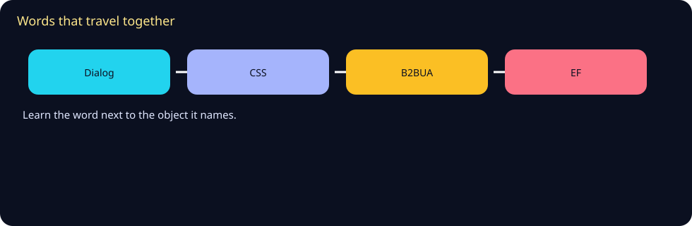
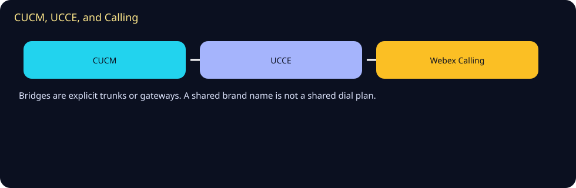
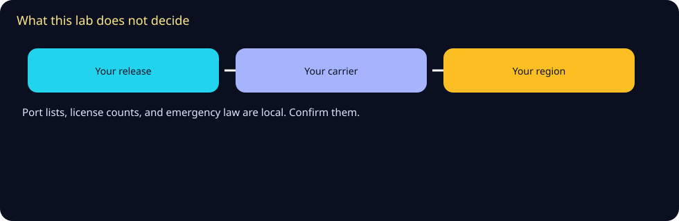

Ecosystem
Words, drawings, and the sibling labs this course can point at. Counts and titles below are from pages opened in 2026-10 or from this repository. A confirm row has no link.
Glossary
71 terms from the rooms in this repository. The same term is listed once.
- Transaction — A request and its matching responses.
- Dialog — A peer relationship identified by Call-ID and tags.
- Early offer — SDP in the INVITE.
- Delayed offer — SDP offered in the reliable response or the 200.
- AOR — The address-of-record being registered.
- Contact — The device URI to try later.
- PRACK — Acknowledgement of a reliable provisional response.
- 100rel — The extension that makes selected 1xx responses reliable.
- Partition — A group of patterns with the same reachability.
- CSS — An ordered list of partitions.
- Route pattern — Digits in a partition that point at a gateway or route list.
- Route list — An ordered set of route groups.
- Translation pattern — A pattern that transforms digits and can continue routing.
- Mask — A digit rewrite applied to a number field.
- SIP trunk — CUCM's signaling peer toward a gateway or another call agent.
- SIP profile — Timers, OPTIONS, and offer behavior for that trunk.
- Dial peer — An IOS rule that matches a call and names a target.
- Preference — A tie-break after match length.
- B2BUA — A user agent that sits between two dialogs.
- Media anchor — RTP terminates on the SBC.
- SRST — Fallback call processing on the branch router.
- Re-home — Phones returning to CUCM after the WAN recovers.
- Local gateway — The premises SBC that connects Webex Calling to PSTN or a PBX.
- Certificate trunk — A trunk that authenticates with a certificate instead of a registration.
- Traversal zone — The zone that joins Expressway-C and Expressway-E.
- Expressway-E — The edge server.
- MRA — Mobile and Remote Access through Expressway.
- SRV — A DNS record the client uses to find the edge.
- Traversal media — The UDP range Expressway uses for remote media.
- Signaling — SIP or the HTTPS path used to register.
- EF — Expedited Forwarding, DSCP 46.
- Trust boundary — The place you decide to keep or rewrite a mark.
- LLQ — A queue that serves a priority class up to a configured rate.
- Packetization — The time to fill one RTP payload.
- Location — A CUCM bandwidth domain for admission control.
- CAC — Call admission control, the decision to allow a call.
- CVP — Customer Voice Portal, the voice browser and call-control front in many designs.
- ICM — The routing brain in UCCE.
- Label — The destination the script returns.
- Peripheral gateway — The process that represents CUCM devices to ICM.
- Flow — The routing document in Webex Contact Center.
- Script — The routing document in ICM.
- Dedicated Instance — A hosted CUCM offer inside the Webex cloud contract.
- Control Hub — The admin place for Webex Calling locations and numbers.
- Dual-run — Old and new paths both available for a number during a test.
- Rollback — Returning the number to the path you saved.
- Survivability gateway — A local gateway mode that keeps selected Calling users up during a cloud outage.
- Fallback test — A planned failure of the primary path.
- Hypothesis — The single fault you are testing.
- Evidence pack — The traces and notes that show the test.
- Ladder — A drawing of messages between named boxes.
- Cause — The reason phrase or Q.850 cause on a failure.
- SDP c= line — The address where media should be sent.
- One-way audio — Media in a single direction.
- MLTS — A multi-line telephone system, the term the FCC page uses for enterprise and hotel phone systems.
- Dispatchable location — The FCC page's term for a validated street address plus detail needed to find the caller.
- ERL — Emergency response location. The zone Emergency Responder binds to a switch port.
- ELIN — Emergency location identification number. The callback number sent for that zone.
- PSAP — Public safety answering point. The Wikipedia article describes it as the call center that answers the emergency call.
- On-site alert — The Emergency Responder notification path named in the Release 15 administration guide.
- Built-in bridge — The phone feature CUCM uses when the phone itself forks recording media.
- Fork — A copy of the media stream sent to a recorder.
- SRC — Session recording client. The CUBE guide says CUBE takes this role when SIPREC is configured.
- SRS — Session recording server. RFC 7865 describes metadata from the server's point of view.
- Recording file — The stored copy of the media.
- Quality score — A review of a call. It is not the media file.
- SIPconnect — The SIP Forum's technical recommendation for IP peering with a VoIP provider.
- Dialplan — The Asterisk or FreeSWITCH rules that match a call. Not a CUCM CSS.
- res_pjsip — The Asterisk SIP channel stack named in the documentation opened for this lab.
- WebRTC — Browser real-time communication. The W3C recommendation is the API. RFC 8825 points at the protocol suite.
- JSEP — JavaScript Session Establishment Protocol, RFC 8829.
Mind map

Dialog, ELIN, fork, and WebRTC are the four words on the drawing. The list above is the rest.
Sister technologies
SIP, RTP, a CUCM dial plan, IOS dial peers, Expressway traversal, DiffServ, UCCE scripts, Emergency Responder locations, recording forks, and an open PBX dialplan are sisters. Learn the object each word names.
These sibling labs opened in 2026-10. They are separate courses. A shared author is not a shared dial plan, and a name here is not an endorsement.
- SIP Universe Free University — SIP campus. The page title that opened is SIP Universe Free University.
- Webex Lab Free University — Webex campus. The page title that opened is Webex Lab Free University.
- Microsoft Voice and Contact Center Lab — Microsoft voice campus. The page title that opened is Microsoft Voice and Contact Center Lab.
- Amazon Connect Lab — Amazon Connect campus. The page title that opened is Amazon Connect Lab.
- Genesys Cloud CX Lab — Genesys campus. The page title that opened is Genesys Cloud CX Lab.
- Five9 Lab — Five9 campus. The page title that opened is Five9 Lab.
- NICE CXone Lab — NICE campus. The page title that opened is Contact Path · NICE CXone Lab.
- AI omni-channel learning lab — AI campus. The page title that opened is AI omni-channel learning lab.
- This UC lab, published copy — The published copy of this UC course. The page title that opened is UC Lab Free University.
Integration map

CUCM meets Emergency Responder, a recorder, and another PBX on explicit trunks, route points, and labels. UCCE still meets CUCM on a label. Webex Calling still meets a local gateway on a SIP trunk. The emergency, recording, and open bridge tracks are the rooms for those three hops.
Future hooks

Releases, carriers, and any emergency or recording rule this lab did not open stay outside the course until you confirm them. The AI lab is a sibling for agents and tools, not a UC feature. The SIP, Webex, Microsoft, and contact-center labs are the next rooms when the peer is no longer CUCM.

Sources and go deeper
Opened 2026-10. A row marked confirm has no link, because that page was not verified.
- RFC. RFC 3261, SIP last checked 2026-10
- RFC. RFC 3550, RTP last checked 2026-10
- RFC. RFC 4566, SDP last checked 2026-10
- FCC. FCC, Kari's Law and RAY BAUM'S Act for multi-line telephone systems last checked 2026-10
- Cisco. Cisco Emergency Responder product support last checked 2026-10
- Cisco. Plan for Cisco Emergency Responder, Release 15 last checked 2026-10
- Cisco. Feature Configuration Guide for CUCM, Release 15, Recording last checked 2026-10
- RFC. RFC 7866, session recording protocol last checked 2026-10
- RFC. RFC 7245, architecture for media recording using SIP last checked 2026-10
- RFC. RFC 8825, WebRTC protocol overview last checked 2026-10
- RFC. RFC 7118, SIP over WebSocket last checked 2026-10
- Wikipedia. SIP trunking (Wikipedia) last checked 2026-10
- Wikipedia. WebRTC (Wikipedia) last checked 2026-10
- FreeSWITCH. FreeSWITCH users manual last checked 2026-10
- Sibling lab. SIP Universe Free University last checked 2026-10
- Sibling lab. Webex Lab Free University last checked 2026-10
- Sibling lab. Microsoft Voice and Contact Center Lab last checked 2026-10
- Sibling lab. Amazon Connect Lab last checked 2026-10
- Sibling lab. Genesys Cloud CX Lab last checked 2026-10
- Sibling lab. Five9 Lab last checked 2026-10
- Sibling lab. NICE CXone Lab last checked 2026-10
- Sibling lab. AI omni-channel learning lab last checked 2026-10
- Sibling lab. This UC lab, published copy last checked 2026-10
- Law. United States public-law text for Kari's Law. confirm. The congress.gov bill page returned a bot challenge, and the PDF text was not readable in this session. The FCC MLTS page that did open is listed separately. last checked 2026-10
- Law. Emergency-calling rule outside the FCC MLTS page. confirm. No statute outside that FCC page was opened. Confirm the rule where the site operates. last checked 2026-10
- Law. Call-recording consent and retention rule. confirm. No privacy or retention statute was opened. RFC 7245 names compliance as a reason some sites record. It does not say which rule applies to you. last checked 2026-10
- WebRTC. CPaaS vendor matrix. confirm. No vendor matrix was opened. The FreeSWITCH manual notes one hosted platform. Confirm any other vendor on that vendor's own page. last checked 2026-10